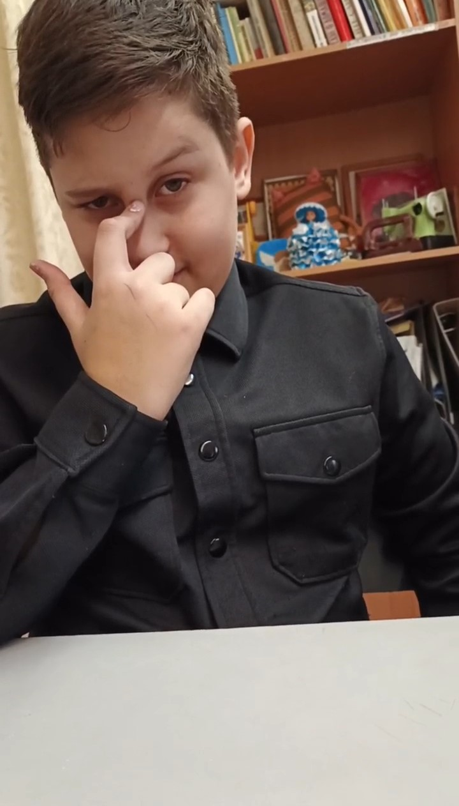

Автор этих строк лично знаком с героем. Все факты проверены в школьных коридорах, учительской и на месте событий. Некоторые имена изменены по этическим соображениям, но сам Натан — настоящий. Как и его легенда.
В школе №12 города Сарова есть имена, которые произносят шёпотом. Есть истории, которые передают из уст в уста. А есть НАТАН. Одно это имя заставляет учителей вздрагивать, а одноклассников — замирать в предвкушении. Истории человека, чей коэффициент полезного действия равен бесконечности, а коэффициент опасности для системы образования не поддаётся исчислению.

Время действия: Начальная школа. Эпоха, когда оценки ставили наклейками, а главным авторитетом был тот, у кого больше всего «смайликов».
Место: Кабинет ИЗО, где властвовала Вера Васильевна — учительница, чей взгляд заставлял сохнуть акварель на палитре.
Участники: Натан Рыжов (тогда ещё просто Натан), Вера Васильевна (легендарная изошка), и, конечно, ФСБ (о котором никто не слышал, но все боялись).
Это был конец урока ИЗО. Солнце клонилось к закату (ну, или просто было пасмурно, но для драматургии лучше думать, что к закату). Ученики по очереди подходили к Вере Васильевне и демонстрировали плоды своих художественных мук.
Натан сидел на последней парте и делал вид, что очень занят важным делом. Например, рассматривал рисунок на парте, который был там ещё до его рождения. Когда очередь дошла до него, он подошёл к учительскому столу с видом человека, который сейчас предъявит миру шедевр.
Вера Васильевна посмотрела на него поверх очков. В её взгляде читалось: «Ну, что на этот раз?»
— Где альбом? — спросила она голосом, от которого у первоклассников подкашивались колени.
Натан выдержал паузу. Достойную "Оскара". Потом, не повышая тона, произнёс фразу, которая навсегда вписала его имя в школьные скрижали:
Это было сказано так, будто он оставил дома не альбом, а секретные документы государственной важности. Вера Васильевна, привыкшая к оправданиям, вдруг почувствовала что-то неладное. Что-то в интонации этого не по годам спокойного мальчика заставило её внутренний компас тревоги зашкалить.
Но она была учителем с многолетним стажем. Она не могла сдаться. И началось.
— Бездарь! — загремело на весь класс. — Ты вообще что-нибудь приносил за этот год?!
Натан стоял, как скала. Ветер перемен обдувал его невидимый плащ. Вера Васильевна распалялась всё больше:
— Безответственный! Ничего тебе не нужно! Родителей вызову!
И вот тогда, в тот самый момент, когда класс затаил дыхание, а мухи на потолке замерли в воздухе, Натан медленно развернулся. Сделал два шага к своей парте. И, не оборачиваясь, бросил через плечо:
Класс взорвался. Кто-то заржал, кто-то замер в ужасе, кто-то начал лихорадочно соображать, можно ли вызвать ФСБ на учительницу ИЗО и что за это будет. Вера Васильевна, по свидетельству очевидцев, на несколько секунд потеряла дар речи. Это были самые длинные секунды в истории начальной школы №12.
Угроза была зафиксирована. Написана докладная. В дело пошли тяжёлые артиллерийские орудия — директор, завуч, родительский комитет. Но тут в игру вступил секретный агент — мама Натана, работавшая в той же школе социальным педагогом.
Что там произошло за закрытыми дверями — неизвестно. Источники говорят о "конструктивном диалоге", "психоэмоциональном состоянии ребёнка" и "необходимости индивидуального подхода". Но факт остаётся фактом: докладная была аннулирована. Дело замяли. Натан вернулся в класс с видом человека, который только что предотвратил третью мировую войну.

Время действия: Конец 7-го класса. Весна. Гормоны играют, окна открыты, и у каждого есть шанс стать бессмертным.
Место: Кабинет музыки. Первый этаж. Роковое окно.
Участники: Натан Рыжов, Ольга Викторовна (учительница музыки), весь класс и, конечно, рюкзак, брошенный в окно первым.
Это была обычная весенняя пятница. Солнце светило. Птицы пели. А в кабинете музыки на первом этаже царила смертельная тоска. Ольга Викторовна, уткнувшись в телефон, что-то листала. Класс, привыкший к такому развитию событий, занимался своими делами. Кто-то играл в "Морской бой", кто-то списывал домашку, кто-то просто смотрел в окно и мечтал о свободе.
Натан смотрел в окно. И мечтал. Ольга Викторовна, не поднимая головы от телефона, что-то буркнула про "поведение". Натан не услышал — он был уже на другой планете. Потом она куда-то вышла. Говорят — за чаем. Говорят — на минуту. Но в историю входят не те, кто ждёт, а те, кто действует.
Натан встал. Подошёл к окну. Открыл его. Класс замер. Ну, первые две секунды. А потом пошёл такой гвалт, что, наверное, было слышно даже в соседней школе.
Натан не обращал внимания. Он был в своей вселенной. Он кинул рюкзак через окно — тот живописно приземлился в кусты сирени, которые уже ждали свою жертву. Потом Натан сел на подоконник. Свесил ноги. Обернулся. Класс затаил дыхание.
И тогда он произнёс. Фразу. Легендарную. Бессмертную. Ту, которую будут повторять ученики и через десять, и через двадцать лет:
И спрыгнул.
Что было дальше — известно каждому. Кусты сирени приняли удар на себя. Рюкзак был уже там, поджидал. Натан встал. Отряхнулся. Посмотрел на окно, откуда только что совершил побег.
Время действия: 14 марта 2026 года. Весна. Снег тает, лёд становится коварным, а Натану, как всегда, всё равно.
Место: Река за лесом. То самое место, где нормальные люди зимой катаются на коньках, а весной обходят стороной.
Участники: Натан Рыжов, Артём Сухов (свидетель), местная фауна (напугана до смерти).
Это случилось 14 марта 2026 года. Запомните эту дату. В этот день законы физики, биологии и здравого смысла были поставлены под сомнение одним человеком.
Натан с Артёмом гуляли где-то в лесу. Источники расходятся во мнениях, что они там делали. Официальная версия — "дышали свежим воздухом". Неофициальная — "искали закладки и приключений на жопу". Учитывая личность главного героя, скорее всего, правдива вторая.
Они спустились к реке. Артём, как нормальный человек, пошёл по берегу, по земле. Твёрдой. Надёжной. Не тающей под ногами. Натан посмотрел на друга, потом на лёд, потом снова на друга. В его голове, вероятно, пронеслась мысль, которая посещает всех великих людей перед великими свершениями:
— Натан, ты дидиблат? — спросил Артём, когда увидел, куда направляется его друг. — Там же лёд тонкий! Март на дворе!
Натан не обернулся. Он шагнул на лёд.
— Да не ссы, лёд крепкий! — бросил он через плечо голосом человека, который либо знает тайны мироздания, либо просто забыл, что такое страх.
Первые несколько метров были скучными. Лёд не трещал. Даже не прогибался. Натан шёл, и ничто не предвещало беды. И вот тут, как сообщают наши источники, Натану стало скучно.
Он остановился. Посмотрел на лёд под ногами. И принял решение, которое навсегда войдёт в анналы школьного безумия. Он начал прыгать. Со всей силы. На тонком весеннем льду. В марте.
Натан уже вошёл в раж. Прыжок. Ничего. Прыжок. Ничего. Ещё прыжок. И вдруг — хруст. Тот самый звук, от которого у любого нормального человека кровь стынет в жилах. Лёд провалился.
Натан провалился на метр.
То есть, давайте будем честны: драматизма в этом моменте было бы больше, если бы он ушёл под воду с головой. Но Натан — не тот человек, который делает что-то наполовину. Он провалился ровно настолько, чтобы испортить обувь, но не настолько, чтобы прекратить веселье.
Он вылез. Мокрый. Холодный. Счастливый. Артём стоял на берегу и сгибался пополам от хохота.
Домой он пришёл мокрый. Мама, по словам самого Натана, устроила ему "люлей". Много люлей. Разных люлей. Педагогических, воспитательных и просто материнских. Но, как известно, никакие люли не могут остановить человека, который уже доказал себе, что он бессмертен.